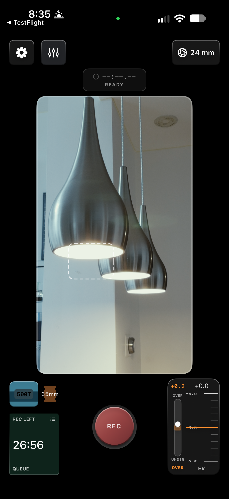

Nitrate
A film-inspired video camera for iPhone. Record, render on device, and save to Photos.


One decision before the shot
Pick a stock and a gauge, then shoot. The monitor shows a neutral image rather than the look, so the emulation arrives when the render finishes — the way film behaves, not a filter over a preview.
The original is kept
Capture writes a real Apple Log recording. The film look is a render of that file, so the original is never destroyed and the look can be redone.
Film behaviour, not a colour wash
Halation, glow and grain are modelled as physical effects with per-stock geometry, not a texture laid over a lookup table.
John Azzinaro · New York · johnjazzinaro@gmail.com